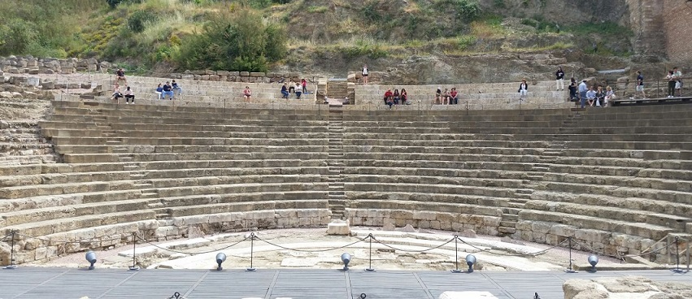
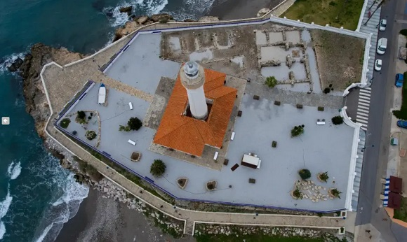
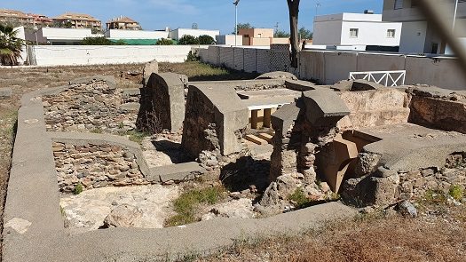
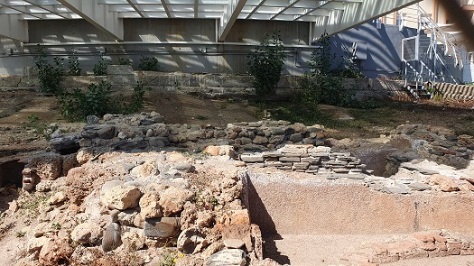

MÁLAGA ROMANA
- Marbella
- Malaga.
Malaka. El Teatro romano conserva parte del "proscaenium", los restos de
lo que fue la "orchestra", una buena parte de la cávea, con trece gradas
y el "vomitorium". Periodo siglo I a.e.c. El teatro romano se encuentra
ubicado al pie de la Alcazaba. Se construyó en la época de Augusto y fue
utilizado hasta el siglo III; después fue utilizado como cantera de
materiales por los árabes para la reestructuración de la Alcazaba,
pudiéndose encontrar dentro de ésta capiteles y fustes de columnas
romanas. De época romana se han hallado los restos de un pozo del siglo
II en las obras del parking de Nosquera.
Bajo el Thyssen fue descubierta una villa romana, de la que destacada el
denominado Ninfeo de los Peces, una fuente romana que incluye unas
pinturas murales que son las más antiguas conservadas en la capital.
Las excavaciones del metro desde mediados de 2006, ha permitido sacar a
la luz restos púnicos, enterramientos romanos, almacenes y complejos
alfareros de época romana, un barrio árabe, murallas de la etapa
medieval...
En 2011 se descubrieron durante las obras de peatonalización del centro
histórico las termas romanas de la Aduana. En junio de 2016, se halló un
alfar romano en las obras de los pisos del Paseo de Martiricos. Los
restos del alfar demuestran la actividad alfarera en esta parte de la
ciudad desde el siglo II a.e.c hasta el siglo I.
En septiembre de 2021 unas excavaciones en el Centro de Málaga
desentierran restos de unas termas romanas. El hallazgo puede
corresponder a la etapa del Imperio (S. I-II). El solar está destinado a
la construcción del centro cultural sefardí, impulsado por la Comunidad
Israelita.
Ver: Video
Ver: Teatros romanos

En diciembre de 2025 la excavación efectuada del Metro de Málaga, en el tramo Guadalmedina-Hilera, han permitido identificar una necrópolis romana, del siglo II al IV, que se extiende entre los sectores de la avenida de Andalucía y calle Hilera.
- En Benalmádena
se han hallado dos villas en el municipio: ‘Benalroma’ y ‘Torremuelle’.
La villa romana de Benalmádena-Costa, del siglo I-IV. Destaca la fuente
escalonada del viridarium. La única Villa romana costera de la provincia
de Málaga. Muy cerca a esta zona, se encuentran los restos de lo que fue
una factoría romana de aceite. La almazara estuvo en funcionamiento
durante 200 años, en el siglo III, se transformó en una fábrica de
salazones y en un horno de cerámica. En diciembre de 2023, se hallaron
los restos de un gran banquete de ostras celebrado en la villa romana
hace unos 1.800 años. Están documentadas más de 2.000 restos de piezas
de este marisco, ya desaparecido de la Costa del Sol.
De la villa romana de Torremuelle, actualmente no se conservan restos
pertenecientes a esta villa de la que sólo se pudo recuperar un mosaico
con motivos geométricos. Recientemente se ha descubierto y excavado la
zona industrial de la villa: una factoría de salazones constituida por
19 piletas de signinum.
- En Cartama se conservan arcos romanos de canalización de agua, y restos de esta la vía romana, el puente y el acueducto. En enero de 2021, hallan en Cártama los restos del mosaico romano de los Trabajos de Hércules. Los sondeos arqueológicos en la calle Padre Navedo localizan el lugar donde se ubicaba esta obra, que actualmente se encuentra en el País Vasco. Este mosaico fue descubierto en 1858 en Cártama, conocido desde entonces como 'Mosaico de los Trabajos de Hércules'. Se trata del suelo de una estancia que constituía el triclinio de una domus o casa de la ciudad romana de Carthima. En septiembre de 2021, la basílica romana vuelve a ver la luz tras culminar los trabajos de excavación arqueológica.
- En Monda se conservan los restos de la calzada romana que unía Monda con Cártama, y de un puente de un arco de origen romano.
- En Teba se conservan los resto del castillo de origen romano en el primer cuerpo de torres y muros, y árabe en el resto.
- El llamado "Mausoleo de la Capuchina", se encuentra a 7 Km. de la localidad de Mollina.
- En Jimera de Libar se localiza el Molino. La Flor a un antiguo molino de agua que se encuentra apoyado sobre los restos de un puente romano.
- En Coin se halla el poblado romano de el Llano de la Virgen. Se trata de un poblado romano propiedad privada, quedando totalmente prohibida la entrada.
- En Casarabonela esta el puente de origen romano aunque su estructura actual, con arco apuntado, es de época medieval y ha sufrido al menos dos reconstrucciones.
- En Alcaucin se conserva el puente de origen romano.

- En Salares se conserva el puente romano de un ojo que atraviesa el río del mismo nombre.
- En Ardales se halla el puente romano de la Molina. De tres ojos y tajamares datado en época de Augusto.
- En Canillas de Albaida se conserva el puente romano.
- Torrox. Poblado desde el neolítico. La romana “Caviclum”. Esta ciudad está datada desde principios del siglo I, destacando los siglo III–IV como época de esplendor. Corresponde a un conjunto arqueológico de los siglos I a IV situado en el faro de Torrox. De época romana destacan los restos de la villa marítima, las termas, mosaicos, factoría salazones y hornos. Su estado de conservación no es bueno. En abril de 2011 se han hallado dinteles y columnas de un templo romano del siglo I. Las excavaciones realizadas así como las fuentes históricas han identificado este yacimiento con la ciudad de Caviclum, mencionada en el Itinerario de Antonino entre las ciudades de Sexi (Almuñécar) y Menoba (en la desembocadura del río Vélez).

|
 |
 |
- En Sierra de Yeguas se conservan las termas romanas localizadas en la carretera que nos lleva a Sierra Yegüas, en la desviación al cortijo de San José.
- En Alameda podemos visitar el yacimiento arqueológico de Alameda. Compuesto por una serie de fosos, interpretados como silos, del período calcolítico y los vestigios de la época romana. Las termas y un área industrial. Las termas romanas de Alameda, con una extensión de 3.000 m2, son las mayores de la provincia de Málaga. Fueron utilizadas entre los siglos I y III. También destaca el Centro Temático de las Termas Romanas.
- En enero de 2011 dos aficionados descubren restos de una villa romana en Campillos, que podría estar datada en el siglo III y que en la actualidad está atravesada por un pequeño arroyo. Los actuales restos visibles están formados por una serie de gruesos muros de piedras y lascas.
- En Mijas en junio de 2018 hallan un asentamiento prerromano en excelente estado de conservación. La principal pieza encontrada en la Finca de Acebedo es un horno inédito en la provincia que procede del tránsito del mundo púnico al romano. En junio de 2019, se descubre una almazara de época romana, unas termas y restos de viviendas. Las termas datan del siglo I al III y se reutilizarían siglos después para la producción de aceite. También se han hallado unas pequeñas habitaciones con letrinas, lo que hace suponer que en el terreno se levantaba una gran villa romana. En el yacimiento de Acebedo, en marzo de 2020, aparecen más restos arqueológicos.
- En Estepona, en enero de 2020, descubren dos asentamientos romanos del siglo I en dos parcelas, uno en La Cala y otro en las obras del Hotel Ikos Andalusia. También de época romana se conservan los restos del Mausoleo Romano de Calle Villa del siglo IV.
- En julio de 2020 hallan en la vega de Cañete la Real, Flavia Sábora, la última de las ciudades romanas que quedaba por localizar en Málaga. Una ortofoto hecha en el otoño de 2012 permite ver la estructura de este importante yacimiento arqueológico. Los expoliadores detectados en las últimas semanas han propiciado que el Ayuntamiento se pusiera a investigar en la zona de El Carrascal.
- En noviembre de 2021, en el yacimiento de las Dunas de San Pedro Alcántara, en una zona situada en el entorno sur de la Basílica Paleocristiana Vega del Mar, como consecuencia de los efectos del último temporal. Los trabajos en las Dunas revelan un taller alfarero romano con tres hornos datados entre los siglos III y V.